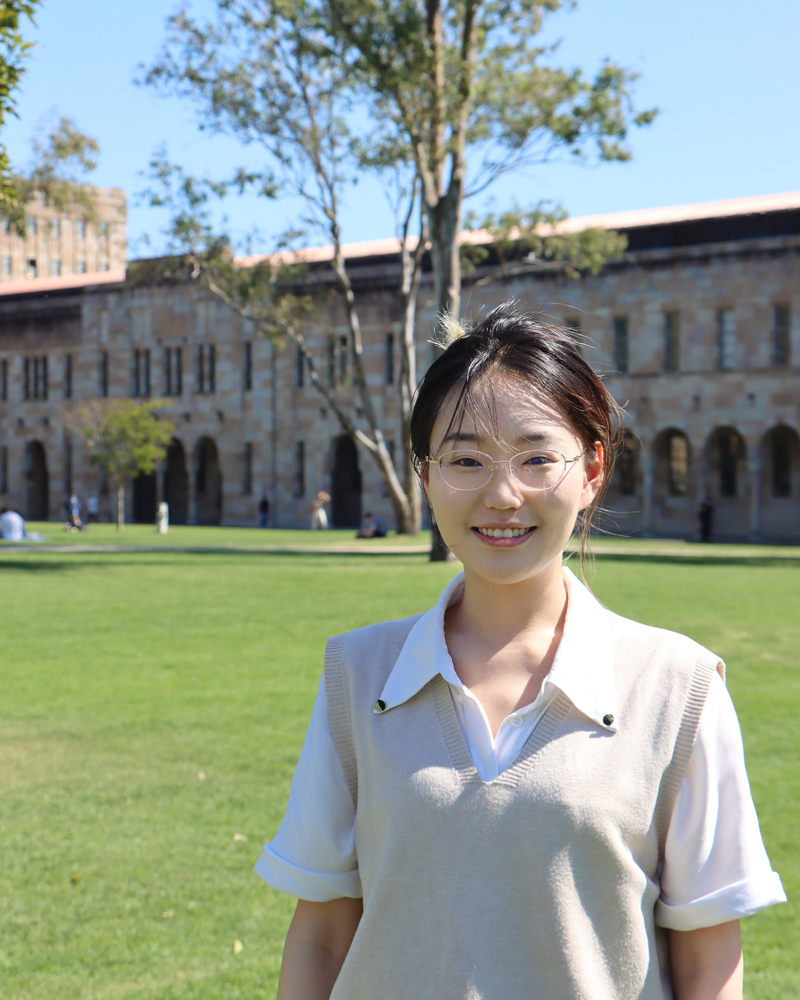

I'm curious, I learn fast, and I like turning ideas into something real.
我是一个 INTJ。走进新环境时，我习惯先安静地观察，一旦认定一件事，我会认真的投入进去。
我最开心的时刻，是把一个原本不会的东西，慢慢变成自己会的东西。然后在某个瞬间突然发现：「诶？原来我真的可以做到。」
我走过的路看起来有点散，从农业、商业到新媒体，再到编程和 AI。但其中一直有一条线：我喜欢解决真实世界的问题，也愿意为此学习新的工具。
不纠结、不犹豫、不拖延，去做就好。
不只要答案，还要搞懂它为什么这样运行。
把不同的领域串联起来。